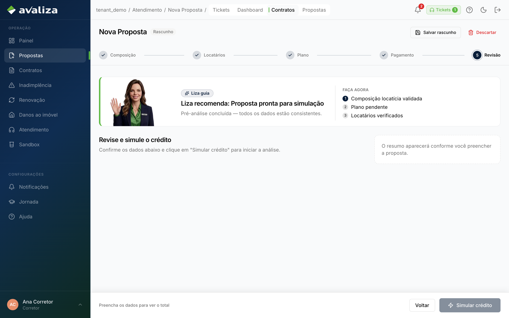
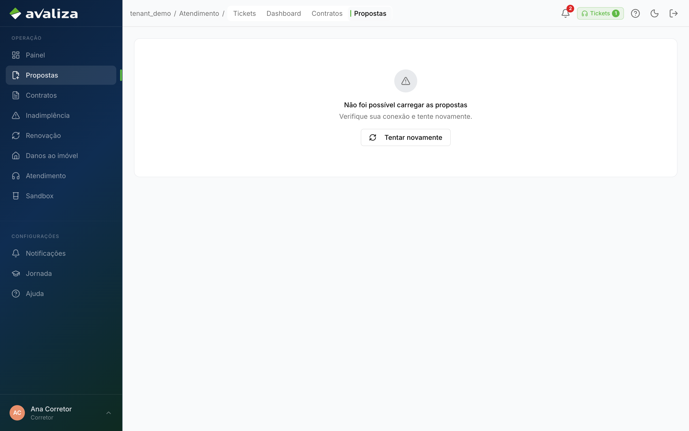
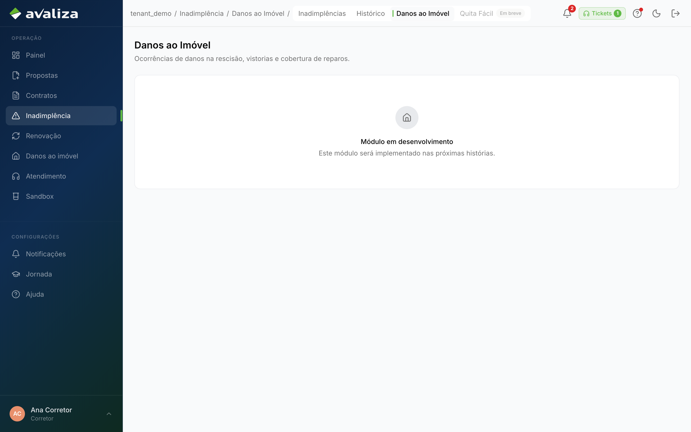
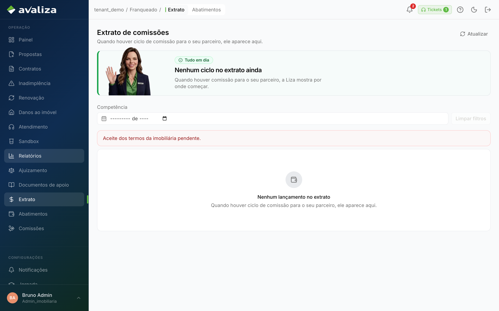
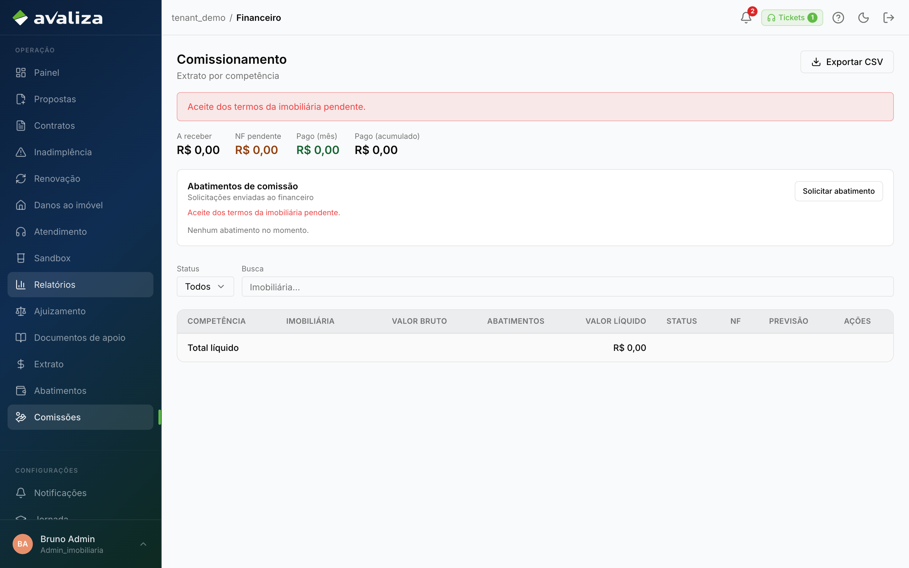
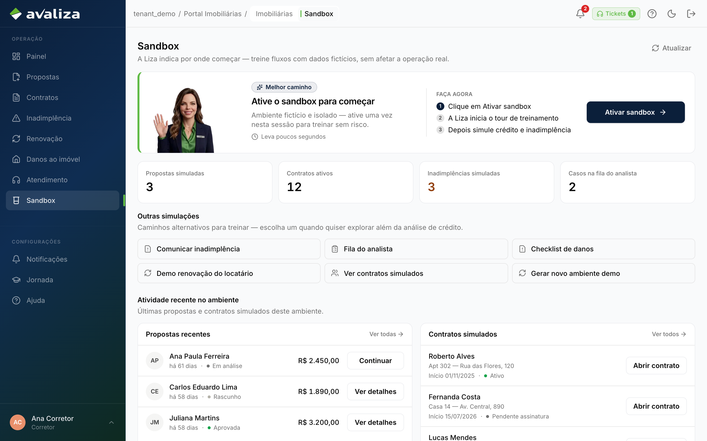
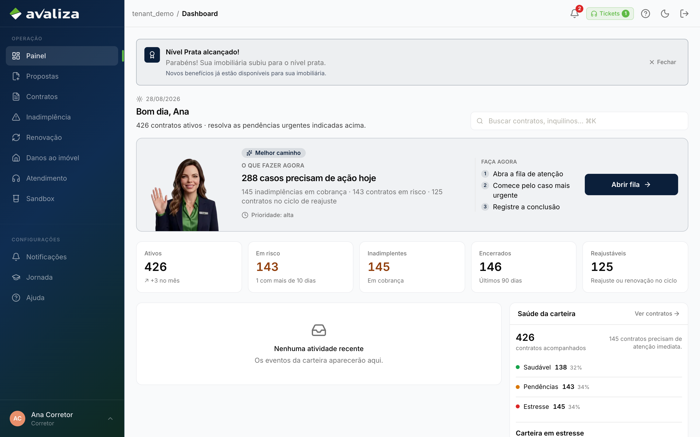
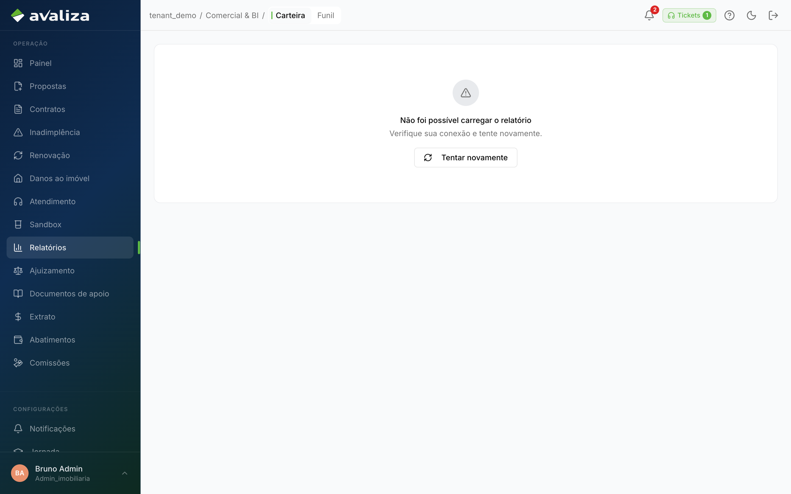

Documento para o responsável · Corretor · Gestor da imobiliária
Para: Responsável da loja (corretor e gestor)
Imobiliária
Originar garantia, protocolar IN, renovar e comunicar dano. A loja não decide crédito, não cobre inadimplência e não ajuíza no lugar da Avaliza.
O que vocês fazem
O trabalho no produto, na ordem em que costuma aparecer no dia. Tela é evidência; não é etapa de um tour.
-
Montar e simular a proposta
Endereço, locatários, plano e modalidade. Simular é o único momento em que a sequência é obrigatória. O motor decide; a loja não aprova crédito.
Nova proposta ·
/propostas/nova/revisao
/propostas/nova/revisao -
Acompanhar propostas da carteira
Ver o que já foi originado. Não é etapa da proposta nova.
Nova proposta ·
/propostas
/propostas -
Protocolar inadimplência
Wizard de 3 passos: tipo de débito, evidência, protocolar. O ciclo da loja acaba aqui. Mérito de cobertura não é da loja.
Comunicar inadimplência ·
/inadimplencia/nova/tipo-debito
/inadimplencia/nova/tipo-debito -
Tratar a fila de renovação
Contrato perto do fim de vigência. A loja recorta; o locatário aceita ou contrapropõe noutro portal.
Fila de renovação (loja) ·
/renovacoes
/renovacoes -
Comunicar dano ao imóvel
Abre o caso de vistoria/laudo. Não é cobertura de aluguel.
Danos ao imóvel ·
/danos-imovel
/danos-imovel -
Acompanhar o jurídico da loja
Só o gestor da imobiliária, não o corretor.
Ver o processo e pegar documento de apoio. Não usar /juridico/tarefas — isso é mesa Avaliza.
Ajuizamento na loja ·
/minha-imobiliaria/juridico
/minha-imobiliaria/juridico -
Conferir extrato e abatimento
Só o gestor da imobiliária, não o corretor.
O que a loja tem a receber. Corretor não vê Franqueado.
Extrato do franqueado ·
/franqueado/extrato
/franqueado/extrato -
Ver comissionamento
Só o gestor da imobiliária, não o corretor.
A mesma superfície de NF que o financeiro usa. Gestor vê; corretor não.
Comissionamento / NF ·
/financeiro/comissionamento
/financeiro/comissionamento -
Treinar no sandbox
Errar sem contaminar carteira real. Reset só vale no sandbox.
Treino no sandbox ·
/imobiliarias/sandbox
/imobiliarias/sandbox
Ciclos que vocês fecham
Jornadas cujo resultado é deste setor. Fronteira, não o passo a passo acima.
vocês entregam Nova proposta Motor decide: aprovado, solidário, banca ou negado. A proposta acaba aqui para o corretor. vocês entregam Fila de renovação (loja) Imobiliária trata o recorte; o locatário manifesta noutro portal. vocês entregam Danos ao imóvel Caso de dano aberto. Não é inadimplência de aluguel. vocês entregam Comunicar inadimplência Caso aberto. O corretor não analisa cobertura. vocês entregam Ajuizamento na loja Loja vê o processo e pega documento de apoio.Só o gestor da imobiliária, não o corretor.
vocês entregam Extrato do franqueado Extrato conferido; abatimento rastreado.Só o gestor da imobiliária, não o corretor.
vocês entregam Treino no sandbox Simulações isoladas por tenant. Reset é destrutivo só no sandbox.Ciclos em que só aparecem
Participam da operação. Quem fecha o ciclo é outro setor.
participa · dono: Financeiro Comissionamento / NF Comissão da loja a faturar. URL /financeiro/comissionamento (não é item da sidebar do financeiro). Só o gestor da imobiliária, não o corretor. participa · dono: Atendimento Ticket de atendimento Alguém tem uma dúvida/bloqueio e abre chamado (ou a Liza faz handoff).Isto não é de vocês
Confusão típica deste time. O dono está no link.
- Banca humanizada — dono: Crédito. Se o motor escalar, o ciclo passa a ser do analista de crédito. A loja não aprova na banca.
- Analisar cobertura — dono: Inadimplência. Protocolar IN não é analisar cobertura. Mérito é do analista de inadimplência.
- Exoneração (Avaliza) — dono: Jurídico. A mesa /juridico/tarefas é Avaliza. A loja só acompanha em /minha-imobiliaria/juridico.
- Recebíveis — dono: Financeiro. Caixa Avaliza. O gestor vê extrato/abatimento em Franqueado, não a fila de recebíveis.
Recebem de
- Recebem Nova proposta de Comercial (Onboarding da imobiliária): Cadastro aprovado — a loja já pode originar
- Recebem Ajuizamento na loja de Jurídico (Exoneração (Avaliza)): Mesmo processo, superfície da imobiliária
Passam para
- De Nova proposta passam para Crédito (Banca humanizada): Motor escala para revisão humana
- De Nova proposta passam para Portais do locatário (Ativação do locatário): Aprovado (motor ou banca)
- De Nova proposta passam para Portais do locatário (Assinar o contrato): Aprovado — link ZapSign é outro token
- De Fila de renovação (loja) passam para Portais do locatário (Manifestação de renovação): Link de manifestação vai ao locatário
- De Comunicar inadimplência passam para Inadimplência (Analisar cobertura): Caso entra na fila do analista de IN
Capacidades do shell (não são jornadas)
Menu e leitura. Não fecham ciclo — mas são as telas que o time abre no dia a dia além do trabalho acima.
-
Painel operacional
Ponto de partida do dia, não um ciclo de negócio.
/dashboard
/dashboard -
Carteira / funil / visão estratégica
Leitura. Aprovar cadastro é a jornada de onboarding.
/relatorios
/relatorios -
Consulta de contratos
Carteira. Originar é Nova proposta; ativar é o portal.
/contratos
/contratos